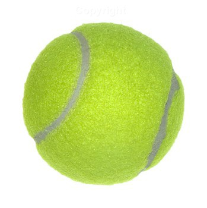

life
f
Sam
by Will N
back to HTML projected

My dog [Sam]
is a crazy,
wild and
weird dog.
He is a 1year
old dog that is
about90 pounds.
And is 4ft 9in
standing on his hind
legs.His favorite thing
to do is eat my flip flops
and to play with the dog next-door
where he was born sam is terrified of brooms and turtles.
The dog that he plays with is his grandma his my was sold to a man when he
was a puppy living with my family.